Because Lord Krishna was the personification of love, this location is
also famed for lyrical expressions such as Sanjhee, Raaslila, Charkula,
Rasiya, and others. Today, the region is recognised for its vibrant
festivals, which take place throughout the year. Lathmaar Holi, Shri
Krishna Janmashtami (Lord Krishna's Birthday), Radha Ashtami (Radha's
Birthday), Kans Vadh, Yam Dwitiya, and Hariyali Teej are all festivals
dedicated to Lord Krishna and his consort Sri Radha Rani.
People are seen dancing, singing, and performing dramas to their full
potential at the Braj festivals. People often act out the childhood
pranks that Shri Krishna used to perpetrate when he was younger. The
roads and temples are adorned with flowers and colours, and the music of
the flute and drums adds to the beautiful atmosphere.
Lathmar Holi
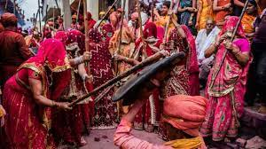 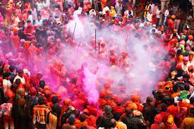 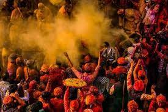
Holi is celebrated in a unique style in the lovely Braj Region known as
Lathmaar Holi. The name may appear to be violent, but when one observes
the traditional event, they may notice that it is full of passion and
energy. On this day, the ladies thrashed the guys with a stick. To save
themselves from the highly energetic and pumped up womenfolk, the guys
must put in a lot of effort. Radha Rani, Lord Krishna's favourite, was
born in the town of Barsana. As Krishna is notorious for playing pranks
on Radha and the gopis, Holi is celebrated with vigour and colour. Lord
Krishna is also claimed to have initiated this practise by splashing
Holi on Radha's face for the first time.
Men from Nandgaon,
Lord Krishna's birthplace, also come to play Holi with the Barsana
females, although they are mostly greeted with rods and lathis instead
of colours. Men generally arrive prepared, knowing that they would be
greeted with sticks at Barsana and may be ordered to dress in feminine
garb and perform in public. Overall, the vibrant scene and unbridled
enthusiasm among men and women exemplify the essence of Holi.
Janmashtami
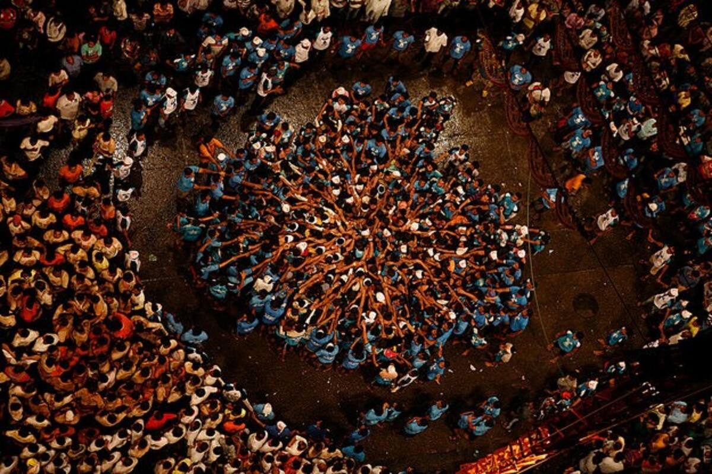 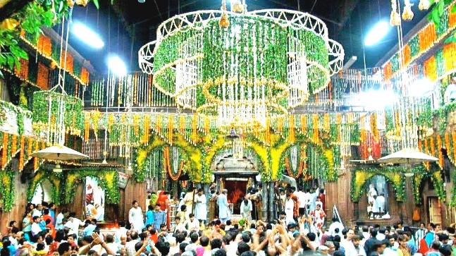 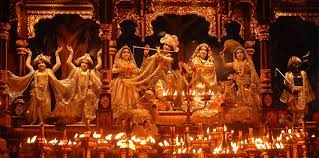 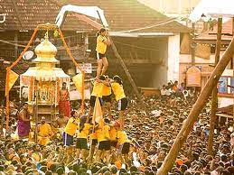
In the month of August, Janmashtami, Lord Krishna's birthday, is
celebrated across the country with great devotion and passion. The holy
festival is observed on the Ashtami of Krishna Paksh, or the 8th day of
the dark fortnight in the month of Bhadon, according to the Hindu
calendar. Janmashtami is mostly celebrated at midnight because Shri
Krishna is said to have been born in a windy and stormy midnight. During
this festive season, the entire country is decked out in lights and
colours. The temples in Mathura and Vrindavan are likewise festooned
with a plethora of flowers and lights, and nightly prayers and religious
chants are recited in the temples. People also do numerous raas lilas
and read Lord Krishna's life biography on this auspicious occasion.
The devotees will have a lot of fun and delight as they perform numerous
devotional songs, pujas, artis, and dances on the festive event. People
also fast until midnight, when they serve food and water to Lord
Krishna. Furthermore, the flute and enchanting music give a fascinating
element to the whole ambiance.
Radha Ashtami
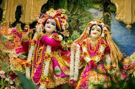 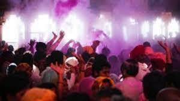 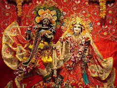 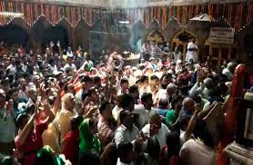
Radha Ashtami, the birthday of Radha Rani, is commemorated across the
country, particularly in Mathura and Vrindavan. The festival takes place
after 15 days of Janmashtami, Lord Krishna's birthday, and is marked
with a lot of devotion and delight. Radha Rani was born on the hallowed
eighth day of the month of Bhadrapada in the town of Barsana in Mathura.
Devotees wait until midnight on this auspicious day to bathe in Radha
Kunda, or Radharani's Pond, which is typically prohibited at other times
of the year because it is considered holy.
Diwali
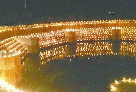 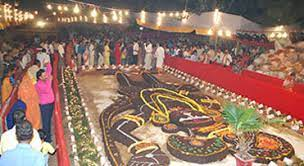 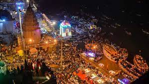 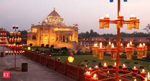
Diwali is a five-day holiday celebrated by locals of Brajbhumi, Lord
Krishna's birthplace, that draws pilgrims from all across the country.
"Pilgrims from all across the country come together as a family to
celebrate," Goverdhan Peethadheshwar Krishna Das Kanchan Maharaj stated.
According to legend, after Lord Krishna defeated the demon 'Aristasur,'
people of Brajbhumi lit clay lamps on Diwali to commemorate his victory.
Keeping with tradition, pilgrims arrive at the Goverdhan hills and light
clay lamps on the Manasi Ganga's bank to commemorate the occasion.
"Though earthen lamps are lit in every temple in Sri Krishna
Janmasthan," Secretary of Sri Krishna Janmasthan Kapil Sharma said, "a
mass earthen lamp lighting ceremony is organised on the day of Diwali."
Goverdhan Puja, which coincides with Diwali, is another event of special
significance for the locals. "Lord Krishna saved Brijwasis by hoisting
mountain Goverdhan on his little finger to save them from Lord Indra's
wrath, who had commanded clouds to drown Brijwasis since they had ceased
paying respect to him," stated Swami Avashesh of a Vrindavan ashram.
After that, Brajwasis served a variety of meals and performed an
obeisance circumambulation around the Goverdhan. According to him, the
tradition of circumambulating Goverdhan hills has continued since then.
Pilgrims perform 'Goverdhan Parikrama' and eat 'prasad' at 'Daan Ghati
Temple' and other temples on the day of Goverdhan Pooja (the day
following Diwali).
The other festivals that happen here are
centered on Lord Krishna and his consort Sri Radha Rani, include kans vadh, Yam Dwitiya, guru purnima and Hariyali teej. On the
occasion of Guru purnima, Muriya Puno Mela is held Goverdhan town of Mathura district. the Mela is held for five days. It is said that
once you visit and witness all such festivals in Brajbhoomi, you can't stop yourself to visit this place again and again because of the attachments
one gets here, this can simply be said to be the magic of Lord Krishna.